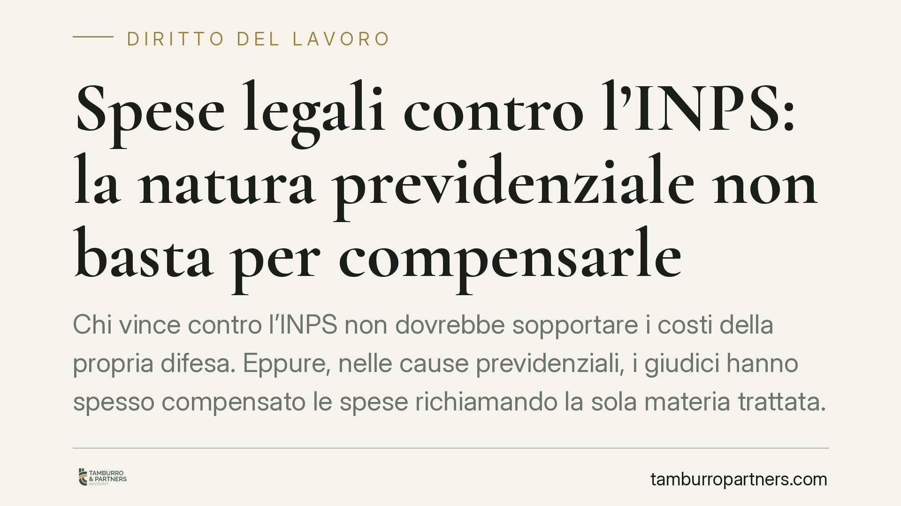

Spese legali contro l'INPS: la natura previdenziale non basta per compensarle
Chi vince contro l'INPS non dovrebbe sopportare i costi della propria difesa. Eppure, nelle cause previdenziali, i giudici hanno spesso compensato le spese richiamando la sola materia trattata. Una recente ordinanza della Cassazione corregge questa prassi: la natura previdenziale della controversia, da sola, non è una ragione valida per non condannare l'ente soccombente al pagamento.

Il fatto
Un cittadino invalido ottiene ragione contro l'INPS, ma il giudice decide di compensare le spese legali: ciascuno paga il proprio avvocato, nonostante l'ente sia risultato soccombente. La motivazione? La "natura previdenziale" della causa.
Una recente ordinanza della Corte di Cassazione interviene su questo schema ricorrente e ne smonta l'impianto. Il principio è netto: la materia previdenziale, in quanto tale, non rientra tra le ipotesi che legittimano la compensazione.
> Nota. Il numero e l'anno esatti della pronuncia sono in corso di verifica: riferiamo qui il principio di diritto, non estremi che non possiamo confermare con certezza.
Compensazione e soccombenza: i concetti di base
Facciamo chiarezza sui due termini.
Soccombenza significa che chi perde la causa paga anche le spese legali della controparte. È la regola generale: chi ha costretto l'altro a difendersi in giudizio, se ha torto, ne sopporta il costo.
Compensazione è l'eccezione: il giudice decide che ognuno sostenga le proprie spese. È uno strumento che, se usato troppo, svuota la tutela della parte che ha ragione.
L'inquadramento normativo
La norma di riferimento è l'art. 92, comma 2, c.p.c. La compensazione è ammessa in presenza di:
- soccombenza reciproca (entrambe le parti perdono su qualcosa);
- assoluta novità della questione trattata;
- mutamento della giurisprudenza su questioni dirimenti.
A queste ipotesi si aggiunge una clausola aperta, introdotta dalla Corte Costituzionale con la sentenza n. 77/2018: il giudice può compensare anche in presenza di "altre analoghe gravi ed eccezionali ragioni". La Consulta ha ritenuto troppo rigido il testo originario, riconoscendo al giudice uno spazio di valutazione.
Il punto centrale è proprio qui: la mera natura previdenziale di una causa non costituisce né una delle ipotesi tipizzate, né una "grave ed eccezionale ragione". È una caratteristica ordinaria di migliaia di controversie, non un fatto straordinario. Usarla come giustificazione automatica significa svuotare di contenuto l'art. 92.
Il regime delle spese nel rito previdenziale
C'è un ulteriore tassello che riguarda da vicino invalidi e assicurati: l'art. 152 delle disposizioni di attuazione del c.p.c.
Questa norma prevede che, nelle cause previdenziali e assistenziali, chi si trova sotto una determinata soglia reddituale non possa essere condannato alle spese in caso di esito a lui sfavorevole (salve eccezioni per domande manifestamente infondate o temerarie). È una tutela pensata per chi non deve essere scoraggiato dal far valere i propri diritti dal timore dei costi.
I due piani vanno tenuti distinti: l'art. 152 protegge l'assistito non abbiente quando perde; l'art. 92 disciplina quando vince. L'ordinanza interviene su questo secondo scenario, impedendo che la vittoria si trasformi in una perdita economica.
Il controllo della Suprema Corte
Un aspetto tecnico ma decisivo: la Cassazione esercita un sindacato pieno sulla motivazione della compensazione.
Non basta che il giudice affermi genericamente di voler compensare: deve indicare le ragioni concrete e verificabili. Se la motivazione si riduce a un richiamo di stile — come "vista la materia" — la decisione è censurabile in sede di legittimità. La Suprema Corte può annullarla.
Questo significa che la compensazione non è una scelta discrezionale incontrollabile: è una decisione che deve reggere al vaglio di merito e di legittimità.
Implicazioni pratiche
Per chi agisce contro l'INPS, la compensazione delle spese produce un effetto perverso: la parte debole, pur avendo ragione, si trova a pagare il proprio difensore. Il risultato è paradossale — la vittoria processuale si traduce in un esborso.
Il principio ribadito dalla Cassazione riequilibra la posizione: se l'ente ha fatto torto, deve sostenere il costo del giudizio che ha reso necessario. Per il cittadino, questo rende economicamente sostenibile l'accesso alla giustizia previdenziale.
Sul piano operativo, la pronuncia offre un argomento solido per impugnare le decisioni che compensano le spese senza una motivazione reale.
Cosa fare in concreto
- Leggi con attenzione la parte della sentenza dedicata alle spese: verifica se la compensazione è motivata in modo specifico o solo con un richiamo generico alla materia.
- Valuta l'impugnazione quando la compensazione è disposta senza ragioni concrete e verificabili: l'assenza di motivazione adeguata è un vizio censurabile.
- Verifica la tua posizione reddituale rispetto alla soglia dell'art. 152 disp. att. c.p.c., che incide sul rischio spese in caso di esito sfavorevole.
- Conserva la documentazione del provvedimento INPS impugnato: la soccombenza dell'ente dipende dalla ricostruzione dei fatti.
Disclaimer
Contributo informativo a cura di Tamburro & Partners - Avv. Giuseppe Tamburro. Non costituisce parere legale.
Ogni storia di lavoro ha i suoi tempi.
Se gestisci HR e vuoi un confronto su contenzioso, ispezioni o licenziamenti, scrivi allo studio. Ti rispondiamo entro un giorno lavorativo.